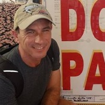

Conocenos
Todos los guías de Capital Sur Free Tours somos guías profesionales. Esto quiere decir, que nos formamos en instituciones reconocidas por el Ministerio de Educación de la Nación, completamos nuestros estudios, y por lo tanto estamos habilitados por el GCBA para ejercer nuestra profesión.Ésto es una garantía de que la información que vas a recibir en nuestros tours es veraz, pero además también indica que estamos capacitados para actuar frente a cualquier emergencia.
En éste apartado queremos que nos conozcas un poco más!
Alex
Español, Inglés, Portugués
Soy un contador que se hartó de los numeros y decidió estudiar historia. Tengo un doctorado en historia de ciencias sociales y decidí dedicarme al turismo hace ocho años. También me gustan los deportes! Mi favorito es el ski, pero juego futbol tenis y basquet. Mi hobby es la fotografía!

Andrés
Español, Inglés, Italiano
Crecí en una granja en el Delta del Tigre, escuchando tango e historias de gauchos. Y aunque mi papá quería que fuera abogado, ser guía es mi profesión y mi pasión. Conozco muy bien la idiosincracia de mi gente y quiero hacerte sentir un Porteño más!

Natalia
Español, Portugués, Alemán
Oriunda de Recoleta, soy Maestra Inicial retirada. Ahora me dedico a hacer paseos por la ciudad. Mi especialidad son los niños. Así que si venís en familia, los más chiquitos se van a entretener mucho! Y si no venís en familia, no importa, todos tenemos un niño interior! Mi idea es que te diviertas mientras ves la ciudad con ojos de niño!
Valeria
Español, Inglés, Hebreo
Nacida y criada en el barrio de Once, en Buenos Aires. Debido a mi herencia judía, fui al colegio Bet-El, y al graduarme viajé a Tel-Aviv, donde estudié piscología. Regresé a Buenos Aires a los 25, y comencé a trabajar en Recursos Humanos. Pero pronto me di cuenta que necesitaba hacer algo que me conectara por el amor por ésta ciudad. Y decidí hacer la carrera de guía.